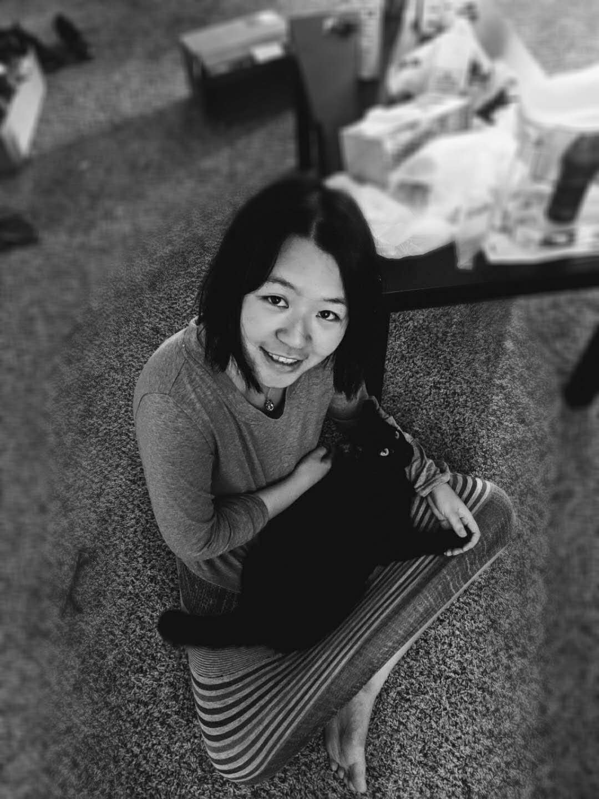

About Me
Personal Interest

I am also a huge fan of Richard P. Feyman and I often spread his cultural memes around. Like him, I enjoy the artistic expression of science and the scientific interpretation of art. I strongly recommed his autobiography --- You Must Be Joking, Mr. Feynman
I enjoy all sorts of Science fiction: novels such as The Three-Body Problem, movies such as 2001: A Space Odyssey, Interstella and Cartoons Rick and Morty. I plan to learn more physics and math in the future! :]

I am also a cat person. Currently, I have a cat named Zhima ('芝麻' in Mandarin refers to 'black sesame'.) He is actually a person cat and really enjoys human company. He is very goofy sometime.